NCERT Solutions for Class 11 Physics Chapter 6 Work Energy and Power are part of Class 11 Physics NCERT Solutions. Here we have given NCERT Solutions for Class 11 Physics Chapter 6 Work Energy and Power.
NCERT Solutions for Class 11 Physics Chapter 6 Work Energy and Power
Topics and Subtopics in NCERT Solutions for Class 11 Physics Chapter 6 Work Energy and Power:
| Section Name | Topic Name |
| 6 | Work Energy and power |
| 6.1 | Introduction |
| 6.2 | Notions of work and kinetic energy : The work-energy theorem |
| 6.3 | Work |
| 6.4 | Kinetic energy |
| 6.5 | Work done by a variable force |
| 6.6 | The work-energy theorem for a variable force |
| 6.7 | The concept of potential energy |
| 6.8 | The conservation of mechanical energy |
| 6.9 | The potential energy of a spring |
| 6.10 | Various forms of energy : the law of conservation of energy |
| 6.11 | Power |
| 6.12 | Collisions |
QUESTIONS FROM TEXTBOOK
Question 6. 1. The sign of work done by a force on a body is important to understand. State carefully if the following quantities are positive or negative:
(a) Work done by a man in lifting a bucket out of a well by means of a rope tied to the bucket,
(b) Work done by gravitational force in the above case,
(c) Work done by friction on a body sliding down an inclined plane,
(d) Work done by an applied force on a body moving on a rough horizontal plane with uniform velocity,
(e) Work done by the resistive force of air on a vibrating pendulum in bringing it to rest.
Answer: Work done, W = T.S = Fs cos θ
(a) Work done ‘positive’, because force is acting in the direction of displacement i.e., θ = 0°.
(b) Work done is negative, because force is acting against the displacement i.e., θ = 180°.
(c) Work done is negative, because force of friction is acting against the displacement i.e., θ= 180°.
(d) Work done is positive, because body moves in the direction of applied force i.e., θ= 0°.
(e) Work done is negative, because the resistive force of air opposes the motion i.e., θ = 180°.
Question 6. 2. A body of mass 2 kg initially at rest moves under the action of an applied horizontal force of 7 N on a table with coefficient of kinetic friction = 0.1. Compute the
(a) Work done by the applied force in 10 s
(b) Work done by friction in 10 s
(c) Work done by the net force on the body in 10 s
(d) Change in kinetic energy of the body in 10 s and interpret your results.
Answer: (a) We know that Uk = frictional force/normal reaction
frictional force = Uk x normal reaction
= 0.1 x 2 kg wt = 0.1 x 2 x 9.8 N = 1.96 N
net effective force = (7 – 1.96) N = 5.04 N
acceleration = 5.04/2 ms-2 = 2.52 ms-2
distance, s=1/2x 2.52 x 10 x 10 = 126 m
work done by applied force = 7 x 126 J = 882 J
(b) Work done by friction = 1.96 x 126 = -246.96 J
(c) Work done by net force = 5.04 x 126 = 635.04 J
(d) Change in the kinetic energy of the body
= work done by the net force in 10 seconds = 635.04 J (This is in accordance with work-energy theorem).
More Resources for CBSE Class 11
- NCERT Solutions
- NCERT Solutions Class 11 Maths
- NCERT Solutions Class 11 Physics
- NCERT Solutions Class 11 Chemistry
- NCERT Solutions Class 11 Biology
- NCERT Solutions Class 11 Hindi
- NCERT Solutions Class 11 English
- NCERT Solutions Class 11 Business Studies
- NCERT Solutions Class 11 Accountancy
- NCERT Solutions Class 11 Psychology
- NCERT Solutions Class 11 Entrepreneurship
- NCERT Solutions Class 11 Indian Economic Development
- NCERT Solutions Class 11 Computer Science
Question 6.3. Given figures are examples of some potential energy functions in one dimension. The total energy of the particle is indicated by a cross on the ordinate axis. In each case, specify the regions, if any, in which the particle cannot be found for the given energy. Also, indicate the minimum total energy the particle must have in each case. Think of some physical contexts for which these potential energy shapes are relevant.
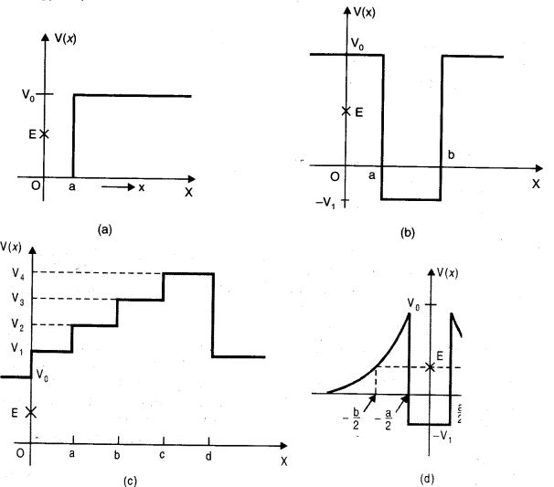
Answer: We know that total energy E = K.E. + P.E. or K.E. = E – P.E. and kinetic energy can never be negative.The object can not exist in the region, where its K.E. would become negative.
(a) In the region between x = 0 and x = a, potential energy is zero. So, kinetic energy is positive. In the region x > a, the potential energy has a value greater than E. So, kinetic energy will be negative in this region. Thus the particle cannot be present in the region x > a.
The minimum total energy that the particle can have in this case is zero.
(b) Here P.E. > E, the total energy of the object and as such the kinetic energy of the object would be negative. Thus object cannot be present in any region of the graph.
(c) Here x = 0 to x = a and x > b, the P.E. is more than E, so K.E. is negative. The particle can not exist in these portions.
(d) The object can not exist in the region between x = -b/2 to x =-a/2 and x = -a/2 to x = -b/2 .Because in this region P.E. > E.
Question 6.4.The potential energy function for a particle executing linear simple harmonic motion is given by V (x) – kx2/2, where k is the force constant of the oscillator. For k = 0.5 Nm-1 , the graph of V (x) versus x is shown in Fig. Show that a particle of total energy 1 J moving under this potential must ‘turn back’ when it reaches x = ± 2 m.
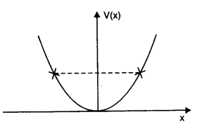
Answer: Here, force constant k = 0.5 Nm-1 and total energy of particle E = 1J. The particle can go up to a maximum distance xm, where its total energy is transformed into elastic potential energy.
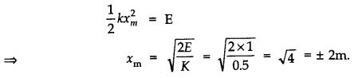
Question 6. 5. Answer the following:
(a) The casing of a rocket in flight bums up due to friction. At whose expense is the heat energy required for burning obtained? The rocket or the atmosphere?
(b) Comets move around the sun in highly elliptical orbits. The gravitational force on the comet due to the sun is not normal to the comet’s velocity in general. Yet the work done by the gravitational force over every complete orbit of the comet is zero. Why?
(c) An artificial satellite orbiting the earth in very thin atomosphere loses its energy gradually due to dissipation against atmospheric resistance, however small. Why then does its speed increase progressively as it comes closer and closer to the earth?
(d) In Fig.(i), the man walks 2 m carrying a mass of 15 kg on his hands. In Fig. (ii), he walks the same distance pulling the rope behind him. The rope goes over a pulley, and a mass of 15 kg hangs at its other end. In which case is the work done greater?
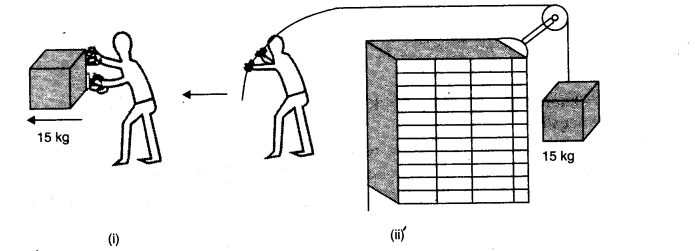
Answer: (a) Heat energy required for burning of casing of rocket comes from the rocket itself. As
a result of work done against friction the kinetic energy of rocket continuously decreases – and this work against friction reappears as heat energy.
(b) This is because gravitational force is a conservative force. Work done by the gravitational ‘ force of the sun over a closed path in every complete orbit of the comet is zero.
(c) As an artificial satellite gradually loses its energy due to dissipation against atmospheric resistance, its potential decreases rapidly. As a result, kinetic energy of
satellite slightly increases i.e., its speed increases progressively.
(d) In Fig. (i), force is applied on the mass, by the man in vertically upward direction but distance is moved along the horizontal.
θ = 90°. W = Fs cos 90° = zero
In Fig. (ii), force is applied along the horizontal and the distance moved is also along the horizontal. Therefore, θ = 0°.
W = Fs cos θ = mg x s cos 0°
W = 15 x 9.8 x 2 x 1 = 294 joule.
Thus, work done in (ii) case is greater.
Question 6. 6. Point out the correct alternative:
(a) When a conservative force does positive work on a body, the potential energy of the body increases/decreases/remains unaltered.
(b)Work done by a body against friction always results in a loss of its kinetic/potential energy.
(c) The rate of change of total momentum of a many-particle system is proportional to the external force/sum of the internal forces of the system.
(d) In an inelastic collision of two bodies, the quantities which do not change after the collision are the total kinetic energy/total linear momentum/total energy of the system of two bodies.
Answer: (a) Potential energy of the body decreases because the body in this case goes closer to the centre of the force.
(b) Kinetic energy, because friction does its work against the motion.
(c) Internal forces can not change the total or net momentum of a system. Hence the rate of change of total momentum of many particle system is proportional to the external force on the system.
(d) In an inelastic collision of two bodies, the quantities which do not change after the collision are the total kinetic energy/total linear momentum/ total energy of the system of two bodies.
Question 6. 7. State if each of the following statements is true or false. Give reasons for your answer.
(a) In an elastic collision of two bodies, the momentum and energy of each body is conserved.
(b) Total energy of a system is always conserved, no matter what internal and external forces on the body are present.
(c) Work done in the motion of a body over a closed loop is zero for every force in nature.
(d) In an inelastic collision, the final kinetic energy is always less than the initial kinetic energy of the system.
Answer: (a) False, the total momentum and total energy of the system are conserved.
(b) False, the external force on the system may increase or decrease the total energy of the system.
(c) False, the work done during the motion of a body over a closed loop is zero only when body is moving under the action of a conservative force (such as gravitational or electrostatic force). Friction is not a conservative force hence work done by force of friction (or work done on the body against friction) is not zero over a closed loop.
(d) True, usually in an inelastic collision the final kinetic energy is always less than the initial kinetic energy of the system.
Question 6. 8. Answer carefully, with reasons:
(a) In an elastic collision of two billiard balls, is the total kinetic energy conserved during the short time of collision of the balls (i.e., when they are in contact)?
(b) Is the total linear momentum conserved during the short time of an elastic collision of two balls?
(c) What are the answers to (a) and (b) for an inelastic collision?
(d) If the potential energy of two billiard balls depends only on the separation distance between their centres, is the collision elastic or inelastic? (Note, we are talking here of potential energy corresponding to the force during collision, not gravitational potential energy).
Answer: (a) In this case total kinetic energy is not conserved because when the bodies are in contact dining elastic collision even, the kinetic energy is converted into potential energy.
(b) Yes, because total momentum conserves as per law of conservation of momentum.
(c) The answers remain unchanged.
(d) It is a case of elastic collision because in this case the forces will be of conservative nature.
Question 6. 9. A body is initially at rest. It undergoes a one-dimensional motion with constant acceleration. The power delivered to it at time t is proportional to
(i) t1/2 (ii) t (iii) t3/2 (iv) t2
Answer: (ii) From v = u + at
v = 0 + at = at
As power, p = F x v
.’. p = (ma) x at = ma2t
Since m and a are constants, therefore, p α t.
Question 6. 10. A body is moving unidirectionally under the influence of a source of constant power. Its displacement in time t is proportional to (i) t1/2 (ii) t (iii) t3/2 (iv) t2
Answer: (ii)p = force x velocity
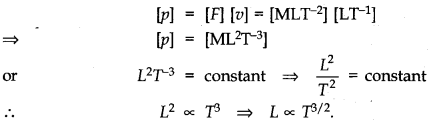
Question 6. 11. A body constrained to move along the z-axis of a coordinate system is subject to a constant force F given by
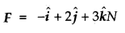
where i, j, k, are unit vectors along the x- y- and z-axis of the system respectively. What is the work done by this force in moving the body a distance of 4 m along the z-axis?
Answer:
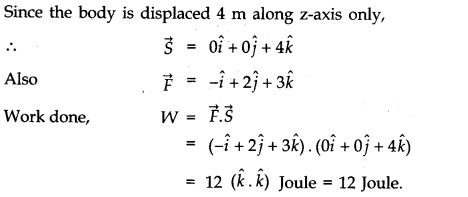
Question 6. 12. An electron and a proton are detected in a cosmic ray experiment, the first with kinetic energy 10 keV, and the second with 100 keV. Which is faster, the electron or the proton? Obtain the ratio of their speeds, (electron mass = 9.11 x 10-31 kg, proton mass = 1.67 x 10-27 kg, 1 eV= 1.60 x 1019J).
Answer:
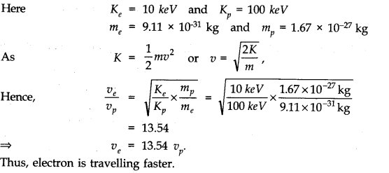
Question 6. 13. A raindrop of radius 2 mm falls from a height of 500 m above the ground. It falls with decreasing acceleration (due to viscous resistance of the air) until at half its original height, it attains its maximum (terminal) speed, and moves with uniform speed thereafter. What is the work done by the gravitational force on the drop in the first and second half of its journey? What is the work done by the resistive force in the entire journey if its speed on reaching the ground is 10 ms-1?
Answer: Here, r = 2 mm = 2 x 10-3 m.
Distance moved in each half of the journey, S=500/2= 250 m.
Density of water, p = 103 kg/ m3
Mass of rain drop = volume of drop x density
m =4/3 π r2 x ρ =4/3 x 22/7 (2 x 10-3)3 x 103 = 3.35 x 10-5 kg
.-. W = mg x s = 3.35 x 10-5 x 9.8 x 250 = 0.082 J
Note: Whether the drop moves with decreasing acceleration or with uniform speed, work
done by the gravitational force on the drop remains the same.
If there was no resistive forces, energy of drop on reaching the ground.
E1= mgh = 3.35 x 10-5 x 9.8 x 500 = 0.164 J
Actual energy, E2 = 1/2mv2 = 1/2 x 3.35 x 10-5 (10)2 = 1.675 x 10-3J
Work done by the resistive forces, W =E1 – E2 = 0.164 – 1.675 x 10-3 W
= 0.1623 joule.
Question 6. 14. A molecule in a gas container hits a horizontal wall with speed 200 msA and angle 30° with the normal, and rebounds with the same speed. Is momentum conserved in the collision? Is the collision elastic or inelastic?
Answer: Let us consider the mass of the molecule be m and that of wall be M. The wall remains at rest due to its large mass. Resolving momentum of the molecule along x-axis and y-axis, we get
The x-component of momentum of molecule
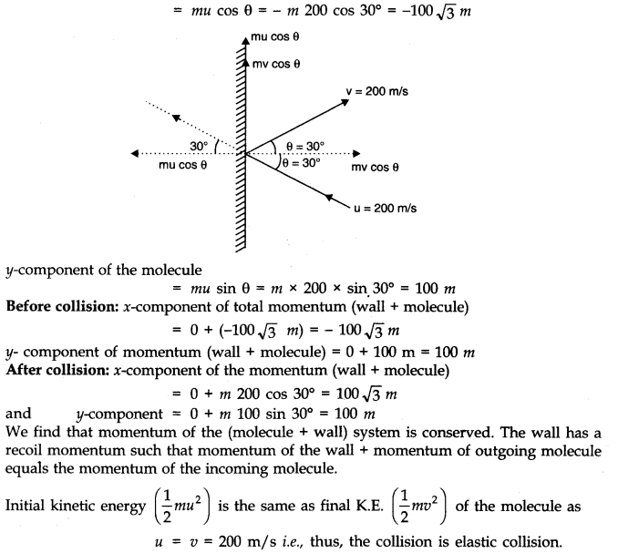
Question 6. 15. A pump on the ground floor of a building can pump up water to fill a tank of volume 30 m3 in 15 min. If the tank is 40 m above the ground, and the efficiency of the pump is 30%, how much electric power is consumed by the pump?
Answer: Here, volume of water = 30 m3 ; t = 15 min = 15 x 60 = 900s
h = 40 m ; n= 30%
As the density of water = p = 103 kg m-3
Mass of water pumped, m = volume x density = 30 x 103 kg
Actual power consumed or output power p0 = W/t = mgh/t
=>p0=(30 x 103 x 9.8 x 40)/900=13070 watt
If pi is input power (required), then as
η=p0/pi=> pi=p0/η = 13070/(30/100)=43567 W =43.56 KW
Question 6. 16. Two identical ball bearings in contact with each other and resting on a friction less table are hit head-on by another ball bearing of the same mass moving initially with a speed V. If the collision is elastic, which of the following (Fig.) is a possible result after collision?
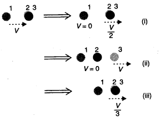
Answer: Let m be the mass of each ball bearing. Before collision, total K.E. of the system
=1/2mv2 + 0 =1/2 mv2
After collision, K.E. of the system is
Case I, E1 = 1/2 (2m) (v/2)2 = 1/4 mv2
Case II, E2 = 1/2 mv2
Case III, E3 = 1/2(3m) (v/3)2 = 1/6mv2
Thus, case II is the only possibility since K.E. is conserved in this case.
Question 6.17. The bob A of a pendulum released from 30° to the vertical hits another bob B of the same mass at rest on a table as shown in Fig. How high does the bob A rise after the collision? Neglect the size of the bobs and assume the collision to be elastic.
Answer: Since collision is elastic therefore A would come to rest and B would begin to move with the velocity of A.
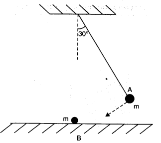
The bob transfers its entire momentum to the ball on the table. The bob does not rise at all.
Question 6. 18. The bob of a pendulum is released from a horizontal position. If the length of the pendulum is 1.5 m, what is the speed with which the bob arrives at the lowermost point, given that it dissipated 5% of its initial energy against air resistance?
Answer: On releasing the bob of pendulum from horizontal position, it falls vertically downward by a distance equal to length of pendulum i.e., h = l = 1.5 m .
As 5% of loss in P.E. is dissipated against air resistance, the balance 95% energy is transformed into K.E. Hence,
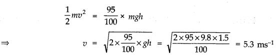
Question 6. 19. A trolley of mass 300 kg carrying a sandbag of 25 kg is moving uniformly with a speed of 27 km/h on a friction less track. After a while, sand starts leaking out of a hole on the trolley’s floor at the rate of 0.05 kg s-1. What is the speed of the trolley after the entire sand bag is empty?
Answer: The system of trolley and sandbag is moving with a uniform speed. Clearly, the system is not being acted upon by an external force. If the sand leaks out, even then no external force acts. So there shall be no change in the speed of the trolley.
Question 6. 20. A particle of mass 0.5 kg travels in a straight line with velocity u = a x3/2, where a = 5 m-1/2 s-1. What is the work done by the net force during its displacement from x = 0 to x = 2 m?
Answer: Here m = 0.5 kg
u=a x3/2, a = 5 m-1/2 s-1.
Initial velocity at x = 0, v1 = a x 0 = 0
Final velocity at x = 2, v2 = a (2)3/2 = 5 x (2)3/2
Work done = increase in K.E
= 1/2 m(v22-v12) = 1/2 x 0.5[(5 x (2)3/2)2 – 0] = 50 J.
Question 6. 21. The blades of a windmill sweep out a circle of area A. (a) If the wind flows at a velocity v perpendicular to the circle, what is the mass of the air passing through it in time t? (b) What is the kinetic energy of the air? (c) Assume that the windmill converts 25% of the wind’s energy into electrical energy, and that A = 30 m2, v = 36 km/h and the density of air is 1.2 kg m-3 . What is the electrical power produced?
Answer: (a) Volume of wind flowing per second = Av Mass of wind flowing per second = Avρ
Mass of air passing in second = Avρt
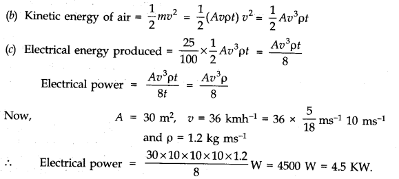
Question 6. 22. A person trying to lose weight (dieter) lifts a 10 kg mass, one thousand times, to a height of 0.5 m each time. Assume that the potential energy lost each time she lowers the mass is dissipated, (a) How much work does she do against the gravitational force? (b) Fat supplies 3.8 x 107J of energy per kilogram which is converted to mechanical energy with a 20% efficiency rate. How much fat will the dieter use up?
Answer: Here, m = 10 kg, h = 0.5 m, n = 1000
(a) work done against gravitational force.
W = n(mgh) = 1000 x (10 x 9.8 x 0.5) = 49000J.
(b) Mechanical energy supplied by 1 kg of fat = 3.8 x 107 x20/100
= 0.76 x107 J/kg
.-. Fat used up by the dieter =1kg/(0.76 x 107) x 49000 = 6.45 x 10-3 kg
Question 6. 23. A family uses 8 kW of power, (a) Direct solar energy is incident on the horizontal surface at an average rate of 200 W per square meter. If 20% of this energy can be converted to useful electrical energy, how large an area is needed to supply 8 kW? (b) Compare this area to that of the roof of a typical house.
Answer: (a) Power used by family, p = 8 KW = 8000 W
As only 20% of solar energy can be converted to useful electrical energy, hence, power
8000 W to be supplied by solar energy = 8000 W/20 = 40000 W
As solar energy is incident at a rate of 200 Wm-2, hence the area needed
A=4000 W/200 Wm-2 =200 m2
(b) The area needed is camparable to roof area of a large sized house.
Question 6. 24. A bullet of mass 0.012 kg and horizontal speed 70 ms-1 strikes a block of wood of mass 0.4 kg and instantly comes to rest with respect to the block. The block is suspended from the ceiling by thin wire. Calculate the height to which the block rises. Also, estimate the amount of heat produced in the block.
Answer: Here, m1 = 0.012 kg, u1 = 70 m/s
m2 = 0.4 kg, u2 = 0
As the bullet comes to rest with respect to the block, the two behave as one body. Let v be the velocity acquired by the combination.
Applying principle of conservation of linear momentum, (m1 + m2) v = m1H1 + m2u2 = m1u1
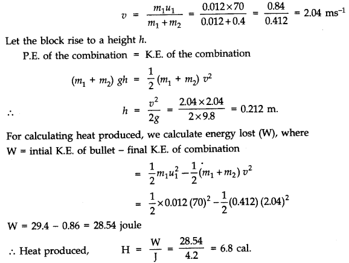
Question 6. 25. Two inclined frictionless tracks, one gradual and the other steep meet at A from where two stones are allowed to slide down from rest, one on each track (Fig). Will the stones reach the bottom at the same time? Will they reach there at the same speed? Explain. Given θ1 = 30°, θ2 = 60°, and h = 10 m, what are the speeds and times taken by the two stones?
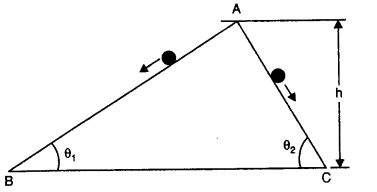
Answer:
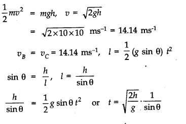
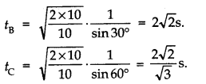
Question 6. 26. A 1 kg block situated on a rough incline is connected to a spring with spring constant 100 Nm-1 as shown in Figure. The block is released from rest with the spring in the unstretched position. The block moves 10 cm down the incline before coming to rest. Find the coefficient of friction between the block and the incline. Assume that the spring has negligible mass and the pulley is frictionless.
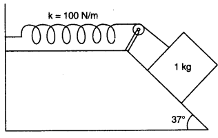
Answer:
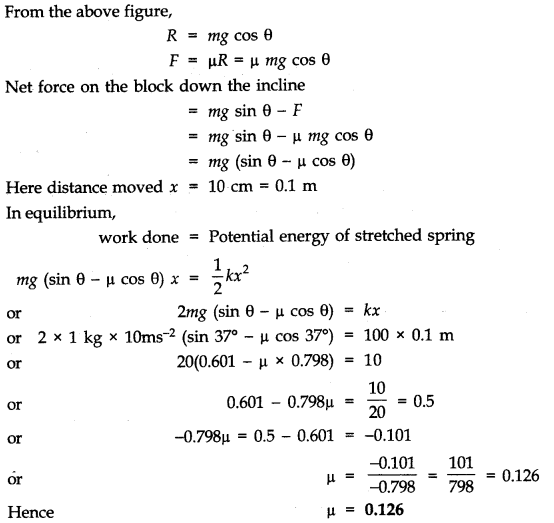
Question 6. 27. A bolt of mass 0.3 kg falls from the ceiling of an elevator moving down with a uniform speed of 7 ms-1. It hits the floor of the elevator (length of elevator = 3 m) and does not rebound. What is the heat produced by the impact? Would your answer be different if the elevator were stationary?
Answer: P.E. of bolt = mgh = 0.3 x 9.8 x 3 = 8.82 J
The bolt does not rebound. So the whole of the energy is converted into heat. Since the value of acceleration due to gravity is the same in all inertial system, therefore the answer will not change even if the elevator is stationary.
Question 6. 28. A trolley of mass 200 kg moves with a uniform speed of 36 km h-1 on a friction less track. A child of mass 20 kg runs on the trolley from one end to the other (10 m away) with a speed of 4 ms-1 relative to the trolley in a direction opposite to the trolley’s motion, and jumps out of the trolley. What is the final speed of the trolley? How much has the trolley moved from the time the child begins to run?
Answer: Let there be an observer travelling parallel to the trolley with the same speed. He will observe the initial momentum of the trolley of mass M and child of mass m as zero. When the child jumps in opposite direction, he will observe the increase in the velocity of the trolley by Δv.
Let u be the velocity of the child. He will observe child landing at velocity (u – Δu) Therefore, initial momentum = 0
Final momentum = MΔ v – m (u – Δv)
Hence, MΔ v – m (u – Δv) = 0
Whence Δv =mu/ M + m
Putting values Δv =4 x 20/ 20 + 220 = ms-1
.-. Final speed of trolley is 10.36 ms-1.
The child take 2.5 s to run on the trolley.
Therefore, the trolley moves a distance = 2.5 x 10.36 m = 25.9 m.
Question 6.29. Which of the following potential energy curves in Fig. cannot possibly describe the elastic collision of two billiard balls? Here r is distance between centres of the balls.
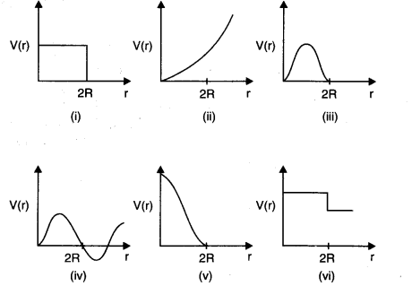
Answer: The potential energy of a system of two masses varies inversely as the distance (r) between 1
them i.e., V (r) α 1/r. When the two billiard balls touch each other, P.E. becomes zero i.e., at r = R + R = 2 R; V (r) = 0. Out of the given graphs, curve (v) only satisfies these two conditions. Therefore, all other curves cannot possibly describe the elastic collision of two billiard balls.
Question 6. 30. Consider the decay of a free neutron at rest: n > p + e–. Show that the two body decay of this type must necessarily give an electron of fixed energy, and therefore, cannot account for the observed continuous energy distribution in the β -decay of a neutron or a nucleus, Fig.
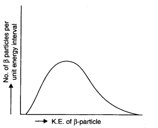
Answer: Let the masses of the electron and proton be m and M respectively. Let v and V be the velocities of electron and proton respectively. Using law of conservation of momentum. Momentum of electron + momentum of proton = momentum of neutron
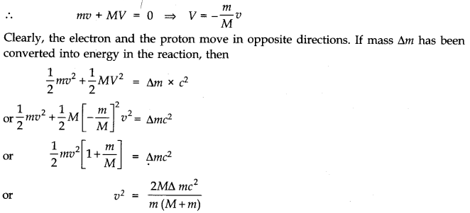
Thus, it is proved that the value of v2 is fixed since all the quantities in right hand side are constant. It establishes that the emitted electron must have a fixed energy and thus we cannot account for the continuous energy distribution in the β-decay of a neutron.
NCERT Solutions for Class 11 Physics All Chapters
- Chapter 1 Physical World
- Chapter 2 Units and Measurements
- Chapter 3 Motion in a Straight Line
- Chapter 4 Motion in a plane
- Chapter 5 Laws of motion
- Chapter 6 Work Energy and power
- Chapter 7 System of particles and Rotational Motion
- Chapter 8 Gravitation
- Chapter 9 Mechanical Properties Of Solids
- Chapter 10 Mechanical Properties Of Fluids
- Chapter 11 Thermal Properties of matter
- Chapter 12 Thermodynamics
- Chapter 13 Kinetic Theory
- Chapter 14 Oscillations
- Chapter 15 Waves
We hope the NCERT Solutions for Class 11 Physics Chapter 6 Work Energy and power help you. If you have any query regarding NCERT Solutions for Class 11 Physics Chapter 6 Work Energy and power, drop a comment below and we will get back to you at the earliest.